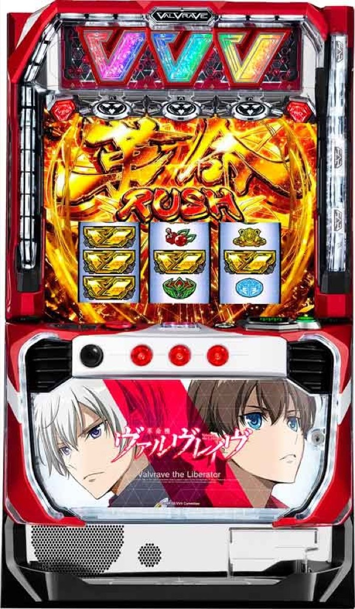

パチスロ 革命機ヴァルヴレイヴ
革命RUSHを突破し、超革命RUSHへ。
- 導入
- 2022
- メーカー
- SANKYO
- 分類
- パチスロ
主要スペック
スマスロ初期を代表する高コイン単価機。通常RUSHから超革命RUSH、ハラキリDRIVEまでの荒さを簡易再現します。
- 設定1のCZ約1/277、ボーナス初当り約1/519
- コイン単価約4.5円の高波機
- 超革命RUSHは継続約90%
パチスロ 革命機ヴァルヴレイヴの見どころと計算条件
スマスロ初期を代表する高コイン単価機。通常RUSHから超革命RUSH、ハラキリDRIVEまでの荒さを簡易再現します。
革命機ヴァルヴレイヴを数字で早分かり
CZから革命BONUS／決戦BONUS、革命RUSH、超革命RUSHまでの流れと、設定ごとの結果差を固定レートで比較できます。
設定別のCZ・初当りを使用
設定1〜6で公開されているCZとボーナス初当りを個別に登録しています。START時に抽選された設定のCZ確率を初当りGへ、CZとボーナス初当りの比率を突破抽選へ使用します。
設定1はCZ約1/277・ボーナス初当り約1/519、設定6はCZ約1/258・ボーナス初当り約1/490です。
BIG・REGではなく2種類のボーナス
通常時の当選にAタイプのBIG・REGという区分はありません。CZなどを経由して革命BONUSまたは決戦BONUSに当選し、革命RUSH突入を目指します。革命RUSHへ入った後はセット継続で超革命RUSHを狙います。
革命BONUSは50G＋αを消化し、払い出し666枚到達で革命RUSH濃厚となるため、突破時と非突破時で獲得枚数が変わります。シミュレーターでは公表平均約470枚とRUSH期待度約55%を保つよう、非突破時330〜390枚・突破時530〜590枚の実獲得目安で抽選します。成功・失敗別の平均値は公表されていないため、この範囲は比較用の簡易モデルです。
決戦BONUSは平均約110枚・RUSH期待度約35%として別抽選します。ボーナス獲得枚数を先に収支へ加え、RUSHへ入った場合はその後の獲得枚数を合算します。ボーナス種別の比率は設定1の代表値として1:1で、実機にある設定差までは再現していません。
通常の革命RUSHは初回を基本20Gとし、2セット目以降の50G・100G合算を設定1約9.5%〜設定6約25.1%で変化させます。個別の内訳は非公表のため、長いセットに当選した場合は50Gを75%・100Gを25%とする比較用モデルです。
革命RUSHは各セット終了後のハラキリチャレンジを約77%で抽選し、3回成功すると4セット目から超革命RUSHへ移行します。3回成功後に別の上位抽選は行いません。
- 革命BONUS非突破は330〜390枚の実獲得目安
- 革命BONUS突破は530〜590枚の実獲得目安
- 通常革命RUSHの100Gは設定1約2.4%〜設定6約6.3%の比較用モデル
- 決戦BONUSはベルナビ消化後・平均約110枚で革命RUSHを抽選
- ハラキリチャレンジ3回成功で4セット目から超革命RUSH
- RUSH非突入でもボーナス出玉を結果と収支へ加算
- 全小役・内部モード・有利区間の詳細は簡略化
平均Gと投資目安の計算
掲載するボーナス初当り約1/519は設定1基準です。当サイトでは50枚あたり31G、1,000円46枚貸しの固定条件から、設定1基準の平均投資目安を約18,200円と計算します。
シミュレーターでは設定1〜6を均等抽選します。設定1〜6で公開されている初当り値を個別に使います。公開されていない特化ゾーン・上位到達率の設定差は加えません。 換金は5.2枚交換で固定し、結果とランキングに設定を表示します。
シミュレーション結果の見方
当るまでCZ・革命RUSHまでのゲーム数
設定設定1・2・3・4・5・6から抽選された今回の設定
上位到達ハラキリチャレンジ3回成功と超革命RUSHへの到達
最終収支差枚と5.2枚交換の収支目安
結果は自動で「マイ記録」に保存され、同じ機種を何回試したか、最高収支、勝率をあとから確認できます。
簡易シミュレーターについて
CZ・革命RUSH・超革命RUSHの流れを固定条件で体験できます。JavaScriptを有効にすると、この位置にシミュレーター、演出、マイ記録、機種別ランキングが表示されます。
結果は娯楽・確率理解のための参考表示です。金銭的価値や交換価値はなく、実際の勝敗や収支を保証しません。18歳未満の方の利用はお控えください。
革命機ヴァルヴレイヴのよくある質問
革命機ヴァルヴレイヴはどんな台？
スマスロ初期を代表する高コイン単価機。 設定1のCZ約1/277、ボーナス初当り約1/519が主な確認ポイントです。
革命機ヴァルヴレイヴの平均投資目安は？
設定1基準の革命BONUS／決戦BONUS初当り約1/519と、50枚あたり31G・46枚貸しの固定条件から、平均18,200円を目安として表示します。実際の設定や遊技状況で結果は変わります。
設定とゲームの流れはどう抽選する？
開始時に設定1・2・3・4・5・6から1つを均等抽選し、CZ、革命BONUS／決戦BONUS、革命RUSH、ハラキリチャレンジ3回成功、超革命RUSHの順で到達を判定します。設定は最終結果とランキングに表示します。
収支はどう計算する？
1,000円46枚貸し・5.2枚交換の固定条件で投資、換金、収支目安を計算します。実店舗の再プレイ、持ちメダル、端数処理は含みません。